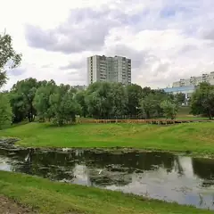
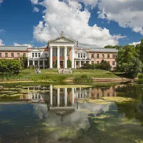

Районы · СВАО
Куда сходить на северо-востоке Москвы
65 мест на северо-востоке Москвы: 21 компьютерный клуб, 11 мест для прогулки, 10 музеев и 8 развлечений. Например, «Японский сад», «Музей космонавтики» и Китайский парк «Хуамин». 30 готовых планов начинаются здесь. Больше всего мест у станций «ВДНХ», «Ботанический сад» и «Дмитровская».
- 65 мест
- 30 планов
- 21 клуб
Места 40 из 44
Ботаническая ул., 4
Японский сад в Ботаническом: пагода, водопады и сакура весной. Вход платный.
Подробнее и маршрут: Японский садПозвать сюда: Японский сад
Фото: Carbonkidka, CC BY-SA 4.0 · Wikimedia Commons
пр. Мира, 111
Под монументом «Покорителям космоса»: настоящие спускаемые аппараты, скафандры и макет станции «Мир».
Подробнее и маршрут: Музей космонавтикиПозвать сюда: Музей космонавтики
Фото: Музей космонавтики, CC0 · Wikimedia Commons
ул. Вильгельма Пика
Китайский сад с пагодами, мраморными мостиками и прудом с карпами. Вход бесплатный, 8:00–22:00.
Подробнее и маршрут: Китайский парк «Хуамин»Позвать сюда: Китайский парк «Хуамин»
Фото: Soluxe Hotel Moscow, CC BY-SA 4.0 · Wikimedia Commons
ул. Академика Королёва, 15, корп. 2
Смотровая на 337 метрах со стеклянным полом. Вход 9:00–22:00, билет от 1 300 ₽, нужен паспорт.
Подробнее и маршрут: Останкинская башняПозвать сюда: Останкинская башня
Фото: Klodklodklod77, CC BY-SA 4.0 · Wikimedia Commons
Ростокинский акведук, просп. Мира
Каменный акведук 1780-х годов над Яузой — одно из старейших инженерных сооружений Москвы.
Подробнее и маршрут: Ростокинский акведукПозвать сюда: Ростокинский акведук
Фото: Dmitry Ivanov., CC BY-SA 4.0 · Wikimedia Commons
ул. Академика Королёва, 15, корп. 1
Новое
Вращающийся ресторан на Останкинской башне: за обедом вся Москва медленно проплывает за окном. Попасть можно только с билетом на смотровую площадку, бронируй заранее.
Подробнее и маршрут: Седьмое небоПозвать сюда: Седьмое небо
Фото: Klodklodklod77, CC BY-SA 4.0 · Wikimedia Commons
пр. Мира, 119
Фонтан «Дружба народов», павильоны и аллеи — гулять можно часами.
Подробнее и маршрут: ВДНХПозвать сюда: ВДНХ
Фото: Alexxx1979, CC BY-SA 4.0 · Wikimedia Commons
1-я Останкинская ул., 28
Дом конструктора Королёва у ВДНХ — филиал Музея космонавтики.
Подробнее и маршрут: Дом-музей КоролёваПозвать сюда: Дом-музей Королёва
Фото: Vladimir OKC, CC BY-SA 3.0 · Wikimedia Commons
просп. Мира, 119 с84А
Музей мультфильмов на ВДНХ: куклы, декорации и мастер-классы по анимации.
Подробнее и маршрут: Музей анимацииПозвать сюда: Музей анимации
Фото: Dsg-Dsg, CC BY-SA 3.0 · Wikimedia Commons
Ботаническая ул., 25, стр. 4
Интерактивный музей шифров и связи: можно самим взламывать коды. Вт–вс 11–20.
Подробнее и маршрут: Музей криптографииПозвать сюда: Музей криптографии
Фото: Leokand, CC0 · Wikimedia Commons
ул. Достоевского, 2
Квартира, где прошло детство Достоевского, во флигеле Мариинской больницы.
Подробнее и маршрут: Музей-квартира ДостоевскогоПозвать сюда: Музей-квартира Достоевского
Фото: Lesio, CC BY-SA 3.0 · Wikimedia Commons
Большая Новодмитровская ул., 36
Бывший стекольный завод: мастерские, лавки дизайнеров, бары и маркеты по выходным.
Подробнее и маршрут: ФлаконПозвать сюда: Флакон
Фото: Flacon PR department, CC BY-SA 4.0 · Wikimedia Commons
Новодмитровская ул., 1
Бывший хлебозавод: 15 кафе, десятки магазинов и шоурумов, крыши и бары. Вход свободный.
Подробнее и маршрут: Хлебозавод №9Позвать сюда: Хлебозавод №9
Фото: Bezik, CC BY-SA 4.0 · Wikimedia Commons

Белозерская ул., 23Г
Деревянные избы, мельница и мастер-классы по старым ремёслам на севере Москвы.
Подробнее и маршрут: Этнографическая деревня БибиревоПозвать сюда: Этнографическая деревня Бибирево
Фото: Lesless, CC BY-SA 3.0 · Wikimedia Commons

Ботаническая ул., 4
Огромный сад у ВДНХ: японский сад, дубравы и оранжерея с тропиками.
Подробнее и маршрут: Главный ботанический садПозвать сюда: Главный ботанический сад
Фото: AlixSaz, CC BY-SA 4.0 · Wikimedia Commons
ул. Образцова, 11, стр. 1А
Интерактивный музей в бывшем Бахметьевском гараже авангардиста Мельникова.
Подробнее и маршрут: Еврейский музейПозвать сюда: Еврейский музей
Фото: Jewish Museum and Tolerance Center, CC SA 1.0 · Wikimedia Commons
ВДНХ, просп. Мира, 119
Летняя сцена ВДНХ под открытым небом: концерты и кино.
Подробнее и маршрут: Зелёный театр ВДНХПозвать сюда: Зелёный театр ВДНХ
Фото: Volchonock, CC BY-SA 3.0 · Wikimedia Commons
пр. Мира, 119, стр. 23
Акулы, скаты и тоннель под водой. Открыт 10:00–22:00, вход до 21:00, билет от 1 400 ₽.
Подробнее и маршрут: МосквариумПозвать сюда: Москвариум
Фото: Dmitry Ivanov., CC BY-SA 4.0 · Wikimedia Commons
пр. Мира, 119, стр. 36
Музей кино в павильоне ВДНХ: костюмы, декорации и интерактивные залы.
Подробнее и маршрут: Музей киноПозвать сюда: Музей кино
Фото: Gerarus, CC BY-SA 3.0 · Wikimedia Commons
просп. Мира, 123Б
Знаменитая скульптура Мухиной у ВДНХ; в павильоне-постаменте проходят выставки.
Подробнее и маршрут: Рабочий и колхозницаПозвать сюда: Рабочий и колхозница
Фото: Willem van de Poll, CC0 · Wikimedia Commons
просп. Мира, 119, стр. 66А
Новое
Павильон ВДНХ, где собраны кухни регионов России: можно попробовать карельский суп с форелью и калитки. Места много — удобно пообедать после прогулки по выставке.
Подробнее и маршрут: Дом российской кухниПозвать сюда: Дом российской кухни
пр. Мира, 119, стр. 40
Пекарня Masa Madre в историческом павильоне «Хлебопродукты» на ВДНХ. 12–22.
Подробнее и маршрут: Cafeteria de MadreПозвать сюда: Cafeteria de Madre
ул. Бориса Галушкина, 17
Новое
Одни из самых популярных хоррор-квестов Москвы: неоновая «Ночь в Токио», «Пожиратель душ», «Король шутов». Сильные актёры и декорации, от 6500 ₽.
просп. Мира, 109
Новое
Кинотеатр 1964 года у ВДНХ: большой зал почти на 500 мест с гигантским экраном и крошечный зал на 20 мест с пуфами. Ретроспективы, фестивали и недорогие билеты.
Подробнее и маршрут: Москино КосмосПозвать сюда: Москино Космос
Ботаническая ул., 2, стр. 1
Новое
Каждую субботу с 22:00 до 5:00 — дискотека на льду с диджеем, светомузыкой и конкурсами. Один билет на всю ночь, крытый лёд работает круглый год.
Подробнее и маршрут: Ночной каток Arena PlayПозвать сюда: Ночной каток Arena Play
Палехская ул., 128, корп. 1
Новое
Термы у Лосиного острова: 5 парных, хаммам, соляная комната и 6 купелей, коллективные парения уже в билете. От 450 ₽ в час — недорого для компании.
Складочная ул., 1, стр. 6
Новое
Падел у Савёловской: стеклянные корты с высокими потолками, прокат ракеток. Корт на четверых — 6 000 ₽/ч, рано утром и после 23:00 дешевле. До 01:00.
Огородный пр., 10, стр. 6
Новое
Боулдеринг в 250 м от «Бутырской»: трассы часто перекручивают, есть фито-бар. Интро для новичков — 2 000 ₽, самостоятельно — от 650 ₽. 7:00–24:00.
Ярославская ул., 12, стр. 1
Новое
Спа у ВДНХ с джакузи под открытым небом, пихтовым хаммамом и японской баней полного цикла. Есть программы для двоих и спа-девичники. 10–22.
Новодмитровская ул., 2, корп. 5
Овощи, коктейли и вино рядом с Хлебозаводом и Флаконом. В пт–сб до 06.
просп. Мира, 119, стр. 27 (ВДНХ)
Новое
16-метровая верёвочная башня на ВДНХ: четыре яруса, около 90 препятствий, маршрут выбираешь сам за 2 часа. Курс — 2 600–3 100 ₽, работает круглый год.
проезд Шокальского, 52
Новое
Открытая асфальтовая трасса почти в километр в Медведкове, катают круглый год. Заезд 10 минут — от 1 700 ₽, карт на 12 л.с. — 2 000 ₽. Бесплатная парковка.
ул. Енисейская, Джамгаровский парк
Парк на северо-востоке с обновлённой набережной у прудов: деревянные столики, шезлонги, прогулка вдоль воды.
Подробнее и маршрут: Джамгаровский паркПозвать сюда: Джамгаровский парк
пр. Мира, 119, стр. 19А
Музей атомной энергии на ВДНХ — один из самых зрелищных павильонов.
Подробнее и маршрут: Павильон «Атом»Позвать сюда: Павильон «Атом»
Свиблово — Медведково
Новый парк вдоль Яузы: деревянные настилы, мостики и тропы на северо-востоке.
пр. Мира, 119, стр. 56
Фудхолл братьев Васильчуков на ВДНХ: гирос, фо, бургеры, пицца и бар. 11–23.
пр. Мира, 119, стр. 47
Кендлбар на ВДНХ: за час делаете свечу из соевого воска, 30+ ароматов. 11–21.
Октябрьская ул., 9/1
Минималистичная кофейня со своей обжаркой, завтраки и сидр. 8–21.
Новодмитровская ул., 2, корп. 7
Десерты своего производства в Савёловском Сити, в двух шагах от Хлебозавода. 8–21.
Новодмитровская ул., 36, стр. 4
Китайская закусочная на «Флаконе»: щедрые порции и демократичные цены.
Подробнее и маршрут: Гламурная чифанькаПозвать сюда: Гламурная чифанька


Готовые планы 18 из 30
- Ростокинский акведук · Акведук XVIII века · м. ВДНХ
- 12 минут пешкомИнкубо · Квест с актёрами
В сумерках пройти вдоль каменного Ростокинского акведука 1780-х, а потом хоррор в «Инкубо» — «Пожиратель душ» или неоновая «Ночь в Токио» с сильными актёрами.
Открыть план: Акведук в сумерках и хоррор-квестПозвать сюда: Акведук в сумерках и хоррор-квест
Фото: Dmitry Ivanov., CC BY-SA 4.0 · Wikimedia Commons
- Останкинская башня · Смотровая площадка · м. Бутырская
- 4 минуты пешкомСедьмое небо · Ресторан на телебашне
Сначала смотровая Останкинской башни со стеклянным полом, потом столик во вращающемся «Седьмом небе»: пока ужинаете, под вами медленно проплывает вся Москва. Билеты и бронь — заранее.
Открыть план: Годовщина на 337 метрахПозвать сюда: Годовщина на 337 метрах
Фото: Klodklodklod77, CC BY-SA 4.0 · Wikimedia Commons
- Музей-квартира Достоевского · Музей · м. Достоевская
- 12 минут пешкомФудхолл «Дружба» · Фудхолл
Квартира, где прошло детство Достоевского, а через десять минут — фудхолл «Дружба»: рамен, утка по-пекински или малатан, порции большие, цены спокойные.
Открыть план: Достоевский и фудхолл «Дружба»Позвать сюда: Достоевский и фудхолл «Дружба»
Фото: Lesio, CC BY-SA 3.0 · Wikimedia Commons
- Музей космонавтики · Музей · м. ВДНХ
- 9 минут пешкомМоскино Космос · Кинотеатр
Спускаемые аппараты и скафандры под монументом «Покорителям космоса», а потом сеанс в кинотеатре «Космос» 1964 года — на огромном экране или в крошечном зале с пуфами. Билеты недорогие.
Открыть план: Музей космонавтики и кино в «Космосе»Позвать сюда: Музей космонавтики и кино в «Космосе»
Фото: Музей космонавтики, CC0 · Wikimedia Commons
- Хлебозавод №9 · Креативный квартал · м. Дмитровская
- 6 минут пешкомФлакон · Дизайн-завод
Два креативных квартала рядом: еда, бары и маркеты, можно переходить из одного в другой.
Открыть план: Бары Хлебозавода и ФлаконаПозвать сюда: Бары Хлебозавода и Флакона
Фото: Bezik, CC BY-SA 4.0 · Wikimedia Commons
- Останкинская башня · Смотровая площадка · м. Бутырская
- 21 минута пешкомДом-музей Королёва · Музей
- 9 минут пешкомМузей космонавтики · Музей
Город с 337 метров со стеклянным полом (возьмите паспорт), потом минут двадцать прогулкой до дома, где жил конструктор Сергей Королёв, а оттуда меньше десяти минут до Музея космонавтики с настоящими спускаемыми аппаратами.
Открыть план: Башня и космосПозвать сюда: Башня и космос
Фото: Klodklodklod77, CC BY-SA 4.0 · Wikimedia Commons
- Японский сад · Сад · м. Ботанический сад
- 22 минуты пешкомКитайский парк «Хуамин» · Парк
Сначала Японский сад в Ботаническом с пагодой и водопадами, потом минут двадцать с небольшим пешком до бесплатного китайского «Хуамина» с мраморными мостиками и прудом с карпами. Он открыт до 22:00, так что торопиться некуда.
Открыть план: Китай и Япония за один деньПозвать сюда: Китай и Япония за один день
Фото: Carbonkidka, CC BY-SA 4.0 · Wikimedia Commons
- Музей космонавтики · Музей · м. ВДНХ
- 12 минут пешкомColizeum ВДНХ · Компьютерный клуб
Музей космонавтики под монументом «Покорителям космоса», а потом круглосуточный Colizeum в двенадцати минутах пешком: можно засидеться до утра.
Открыть план: Космос днём, катка ночьюПозвать сюда: Космос днём, катка ночью
Фото: Музей космонавтики, CC0 · Wikimedia Commons
- Музей космонавтики · Музей · м. ВДНХ
- 16 минут пешкомВДНХ · Парк
Настоящие спускаемые аппараты, скафандры и макет станции «Мир» в музее под монументом, а потом прогулка по ВДНХ к фонтану «Дружба народов».
Открыть план: Космос и ВДНХПозвать сюда: Космос и ВДНХ
Фото: Музей космонавтики, CC0 · Wikimedia Commons
- Японский сад · Сад · м. Ботанический сад
- 14 минут пешкомCafeteria de Madre · Пекарня
Осенью японские клёны у пруда становятся багровыми. Потом через ВДНХ — за хлебом и кофе в «Хлебопродукты». Сад работает по сезонному расписанию: проверь перед выходом.
Открыть план: Красные клёны в Японском садуПозвать сюда: Красные клёны в Японском саду
Фото: Carbonkidka, CC BY-SA 4.0 · Wikimedia Commons
- Москвариум · Океанариум · м. ВДНХ
- 16 минут пешкомВДНХ · Парк
Акулы и подводный тоннель, а потом прогулка по аллеям ВДНХ к фонтану «Дружба народов».
Открыть план: Океанариум и фонтаны ВДНХПозвать сюда: Океанариум и фонтаны ВДНХ
Фото: Dmitry Ivanov., CC BY-SA 4.0 · Wikimedia Commons
- Хлебозавод №9 · Креативный квартал · м. Дмитровская
- 6 минут пешкомФлакон · Дизайн-завод
Шоурумы локальных дизайнеров, кофейни и маркеты — можно потеряться на полдня.
Открыть план: Шопинг на Хлебозаводе и ФлаконеПозвать сюда: Шопинг на Хлебозаводе и Флаконе
Фото: Bezik, CC BY-SA 4.0 · Wikimedia Commons
- Японский сад · Сад · м. Ботанический сад
- 14 минут пешкомCafeteria de Madre · Пекарня
Пагода и водопады Японского сада в осенних красках, а потом кофе и выпечка Masa Madre в павильоне «Хлебопродукты» на ВДНХ, 14 минут пешком. Пекарня открывается в 12.
Открыть план: Японский сад и свежий хлебПозвать сюда: Японский сад и свежий хлеб
Фото: Carbonkidka, CC BY-SA 4.0 · Wikimedia Commons
- Ростокинский акведук · Акведук XVIII века · м. ВДНХ
Каменный акведук XVIII века над Яузой — красивее всего на закате.
Открыть план: Акведук над ЯузойПозвать сюда: Акведук над Яузой
Фото: Dmitry Ivanov., CC BY-SA 4.0 · Wikimedia Commons
- SkyTown · Верёвочный парк · м. Ботанический сад
- 16 минут пешкомДом российской кухни · Фудхолл на ВДНХ
Два часа на верёвочной башне SkyTown высотой до 16 метров — маршрут выбираете сами, — а потом обед в Доме российской кухни: карельский суп с форелью и калитки.
Открыть план: Верёвочная башня и обед на ВДНХПозвать сюда: Верёвочная башня и обед на ВДНХ
- Музей криптографии · Музей · м. Фонвизинская
Интерактивный музей шифров и связи, где можно самим попробовать взломать код. Работает со вторника по воскресенье, 11–20.
Открыть план: Взломать шифр в музее криптографииПозвать сюда: Взломать шифр в музее криптографии
Фото: Leokand, CC0 · Wikimedia Commons
Пагоды, мраморные мостики и пруд с карпами — вход бесплатный.
Открыть план: Китайский садПозвать сюда: Китайский сад
Фото: Soluxe Hotel Moscow, CC BY-SA 4.0 · Wikimedia Commons
- Музей анимации · Музей · м. Ботанический сад
Куклы и декорации из мультфильмов, а ещё мастер-класс по анимации в музее на ВДНХ.
Открыть план: Мастер-класс по мультфильмамПозвать сюда: Мастер-класс по мультфильмам
Фото: Dsg-Dsg, CC BY-SA 3.0 · Wikimedia Commons
Компьютерные клубы 10 из 21
ул. Космонавтов, 6, подъезд 3
Круглосуточно
Круглосуточный Colizeum в паре минут от ВДНХ: днём — Космос и павильоны, вечером — катки до утра.
Подробнее и маршрут: Colizeum ВДНХПозвать сюда: Colizeum ВДНХ
Новоалексеевская ул., 12, стр. 1 (ТЦ «Колорит», 2 этаж)
Круглосуточно
Основной зал 42 ПК с RTX 4060, VIP-зал 10 ПК с RTX 4070 SUPER, есть PS5. Второй этаж ТЦ «Колорит». Работает круглосуточно.
Подробнее и маршрут: 1shot АлексеевскаяПозвать сюда: 1shot Алексеевская
пр. Дежнёва, 23 (ТД «Вавилон-92», вход с левой стороны)
Круглосуточно
Клуб в ТД «Вавилон-92» в Южном Медведкове, ~1,7 км от «Бабушкинской». На 2 этаже того же здания — кибер-арена Wtf?!. Работает круглосуточно.
Подробнее и маршрут: Арена (ТД «Вавилон-92»)Позвать сюда: Арена (ТД «Вавилон-92»)
ул. Пришвина, 23 (цокольный этаж)
Круглосуточно
Районный клуб в цокольном этаже на Пришвина, ~300 м от «Бибирева». Можно прийти со своей периферией и едой. Работает круглосуточно.
Подробнее и маршрут: Киберия БибиревоПозвать сюда: Киберия Бибирево
Алтуфьевское ш., 80 (ТЦ «Арфа»)
Круглосуточно
Клуб сети КиберПрайд на Алтуфьевском шоссе у метро Алтуфьево. Работает круглосуточно.
Подробнее и маршрут: КиберПрайд АлтуфьевоПозвать сюда: КиберПрайд Алтуфьево
ул. Лётчика Бабушкина, 30, стр. 1
Круглосуточно
От 100 ₽/час. Залы STANDARD, HOME, VIP, SOLO, DUO, TRIO и PS ROOM с PS5. Работает круглосуточно.
Подробнее и маршрут: КиберПрайд БабушкинскаяПозвать сюда: КиберПрайд Бабушкинская
Новоалексеевская ул., 22 (подземная парковка, −1 этаж)
Круглосуточно
Вход через подземную парковку. Рядом с метро Алексеевская. Сайт kiberum.club. Работает круглосуточно.
Бутырская ул., 89, стр. 2 (цокольный этаж, −1)
Круглосуточно
25 ПК (20 в общем зале с RTX 2060 + VIP-комната на 5 мест), 3 PS5, бар. От 150 ₽/час. Работает круглосуточно.
Подробнее и маршрут: Colizeum БутырскаяПозвать сюда: Colizeum Бутырская
ул. Малыгина, 9, стр. 2 (цокольный этаж)
Круглосуточно
Около 30 ПК и 3 PS5, от 150 ₽/час. От метро далеко: около 2,5 км до Медведково и Бабушкинской. Работает круглосуточно.
Подробнее и маршрут: Colizeum ЛосиноостровскийПозвать сюда: Colizeum Лосиноостровский
Отрадная ул., 16
Круглосуточно
28 ПК (Intel i5-10400F, RTX 2060) и VIP-зона на 10 ПК, 2 PS5. От 120 ₽/час. Гардероб, кондиционер, стримерская. Работает круглосуточно.
Подробнее и маршрут: Colizeum ОтрадноеПозвать сюда: Colizeum Отрадное
Как позвать
- Выбери план, место или событие — в карточке адрес, цены и маршрут в Яндекс Картах.
- Нажми «Позвать сюда» — соберётся приглашение-игра для свидания или голосование для компании.
- Отправь ссылку в любой мессенджер: тебе ответят, а компания отметит, куда и когда может. Бесплатно и без регистрации.